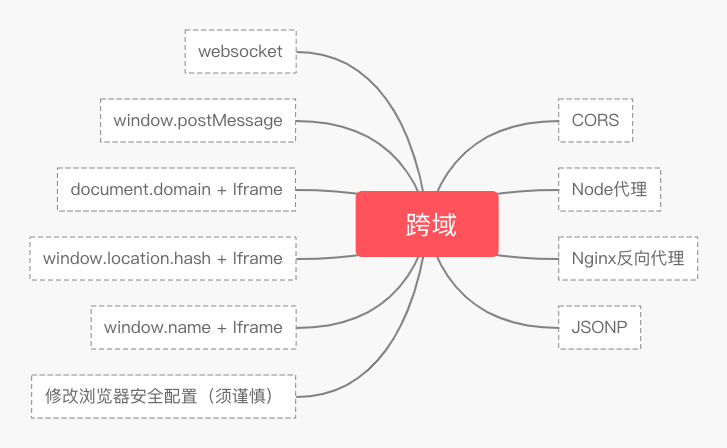
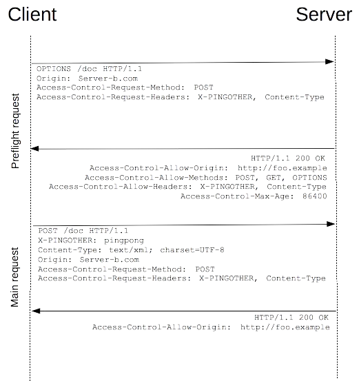
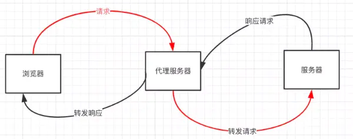

学习下，如何优雅的跨域~

什么是跨域
同源策略及其限制
同源策略：”协议+域名+端口”三者相同（两个不同的域名指向同一个ip地址，也非同源）
缺少了同源策略，浏览器很容易受到XSS、CSRF等攻击。
同源策略限制内容有：
- Cookie、LocalStorage、IndexedDB 等存储性内容
- DOM 节点
- AJAX 请求发送后，结果被浏览器拦截了
有三个标签是允许跨域加载资源：
<img src=XXX><link href=XXX><script src=XXX>
当协议、子域名、主域名、端口号中任意一个不相同时，都算作不同域。
常见跨域场景
| URL | 说明 | 是否允许通信 |
|---|---|---|
| http://www.a.com/a.jshttp://www.a.com/b.js | 同一域名下 | 允许 |
| http://www.a.com/lab/a.jshttp://www.a.com/script/b.js | 同一域名下不同文件夹 | 允许 |
| http://www.a.com:8000/a.jshttp://www.a.com/b.js | 同一域名，不同端口 | 不允许 |
| http://www.a.com/a.jshttps://www.a.com/b.js | 同一域名，不同协议 | 不允许 |
| http://www.a.com/a.jshttp://70.32.92.74/b.js | 域名和域名对应IP | 不允许 |
| http://www.a.com/a.jshttp://script.a.com/b.js | 主域相同，子域不同 | 不允许 |
| http://www.a.com/a.jshttp://a.com/b.js | 同一域名，不同二级域名（同上） | 不允许 |
| http://www.cnblogs.com/a.jshttp://www.a.com/b.js | 不同域名 | 不允许 |
- 协议和端口造成的跨域问题“前台”无法处理
- 请求跨域了，那么请求发出了没？
跨域并不是请求发不出去，请求能发出去，服务端能收到请求并正常返回结果，只是结果被浏览器拦截了。
跨域解决方案
jsonp
JSONP原理
利用 <script> 标签没有跨域限制的漏洞，网页可以得到从其他来源动态产生的 JSON 数据。
JSONP请求一定需要对方的服务器做支持才可以。
JSONP优缺点
优点： 简单兼容性好，可用于解决主流浏览器的跨域数据访问的问题
缺点：仅支持get方法具有局限性,不安全可能会遭受XSS攻击
JSONP的实现
向http://localhost:3000/say?wd=Iloveyou&callback=show这个地址请求数据，然后后台返回show('XXX')，最后会运行show()这个函数，打印出’XXX’
// index.html
function jsonp({ url, params, callback }) {
return new Promise((resolve, reject) => {
let script = document.createElement('script')
window[callback] = function(data) {
resolve(data)
document.body.removeChild(script)
}
params = { ...params, callback } // wd=b&callback=show
let arrs = []
for (let key in params) {
arrs.push(`${key}=${params[key]}`)
}
script.src = `${url}?${arrs.join('&')}`
document.body.appendChild(script)
})
}
jsonp({
url: 'http://localhost:3000/say',
params: { wd: 'XXX' },
callback: 'show'
}).then(data => {
console.log(data)
})
CORS
CORS 需要浏览器和后端同时支持。
IE 8 和 9 需要通过 XDomainRequest 来实现。
浏览器会自动进行 CORS 通信，实现 CORS 通信的关键是后端。只要后端实现了 CORS，就实现了跨域。
服务端设置 Access-Control-Allow-Origin 就可以开启 CORS。
该属性表示哪些域名可以访问资源，如果设置通配符则表示所有网站都可以访问资源。
设置 CORS 和前端没什么关系，但是发送请求时，会分为简单请求和复杂请求。
简单请求
同时满足
- 请求方法是以下三种方法之一
- HEAD
- GET
- POST
- HTTP的头信息不超出以下几种字段
- Accept
- Accept-Language
- Content-Language
- Last-Event-ID
- Content-Type：只限于三个值application/x-www-form-urlencoded、multipart/form-data、text/plain
对于简单请求，浏览器直接发出CORS请求。具体来说，就是在头信息之中，增加一个Origin字段。
GET /cors HTTP/1.1
Origin: http://api.bob.com
Host: api.alice.com
Accept-Language: en-US
Connection: keep-alive
User-Agent: Mozilla/5.0...
上面的头信息中，Origin字段用来说明，本次请求来自哪个源（协议 + 域名 + 端口）。服务器根据这个值，决定是否同意这次请求。
服务器会返回一个正常的HTTP回应。回应的头信息不包含Access-Control-Allow-Origin字段（详见下文），认为异常，从而抛出一个错误，被XMLHttpRequest的onerror回调函数捕获。
注意，这种错误无法通过状态码识别，因为HTTP回应的状态码有可能是200。
如果Origin指定的域名在许可范围内服务器返回的响应，会多出几个头信息字段:
Access-Control-Allow-Origin: http://api.bob.com
Access-Control-Allow-Credentials: true
Access-Control-Expose-Headers: FooBar
Content-Type: text/html; charset=utf-8
头信息中，与CORS请求相关的字段以Access-Control-开头
-
Access-Control-Allow-Origin：必须。值要么是请求时Origin字段的值，要么是一个*，表示接受任意域名的请求。 -
Access-Control-Allow-Credentials：可选。默认Cookie不包括在CORS请求之中。设为true，Cookie可以包含在请求中发给服务器。这个值只能为true，不发送Cookie，删除该字段。 -
Access-Control-Expose-Headers：可选。CORS请求时，XMLHttpRequest对象的getResponseHeader()方法只能拿到6个基本字段：Cache-Control、Content-Language、Content-Type、Expires、Last-Modified、Pragma。如果想拿到其他字段，就必须在Access-Control-Expose-Headers里面指定。上面的例子指定，getResponseHeader('FooBar')可以返回FooBar字段的值。
如果要把Cookie发到服务器，一方面要服务器指定Access-Control-Allow-Credentials字段
Access-Control-Allow-Credentials: true
另一方面，开发者必须在AJAX请求中打开withCredentials属性
var xhr = new XMLHttpRequest();
xhr.withCredentials = true;
注意：如果要发送Cookie，Access-Control-Allow-Origin必须指定明确的、与请求网页一致的域名（不能为星号）。
Cookie依然遵循同源政策，只有用服务器域名设置的Cookie才会上传，其他域名的Cookie并不会上传，且（跨源）原网页代码中的document.cookie也无法读取服务器域名下的Cookie。
复杂请求
不符合以上条件的请求就肯定是复杂请求了。
复杂请求的CORS请求，会在正式通信之前，增加一次HTTP查询请求，称为”预检”请求,该请求是
option方法的，通过该请求来知道服务端是否允许跨域请求。

// index.html
let xhr = new XMLHttpRequest()
document.cookie = 'name=xiamen' // cookie不能跨域
xhr.withCredentials = true // 前端设置是否带cookie
xhr.open('PUT', 'http://localhost:4000/getData', true)
xhr.setRequestHeader('name', 'xiamen')
xhr.onreadystatechange = function() {
if (xhr.readyState === 4) {
if ((xhr.status >= 200 && xhr.status < 300) || xhr.status === 304) {
console.log(xhr.response)
//得到响应头，后台需设置Access-Control-Expose-Headers
console.log(xhr.getResponseHeader('name'))
}
}
}
xhr.send()
//server1.js
let express = require('express');
let app = express();
app.use(express.static(__dirname));
app.listen(3000);
//server2.js
let express = require('express')
let app = express()
let whitList = ['http://localhost:3000'] //设置白名单
app.use(function(req, res, next) {
let origin = req.headers.origin
if (whitList.includes(origin)) {
// 设置哪个源可以访问我
res.setHeader('Access-Control-Allow-Origin', origin)
// 允许携带哪个头访问我
res.setHeader('Access-Control-Allow-Headers', 'name')
// 允许哪个方法访问我
res.setHeader('Access-Control-Allow-Methods', 'PUT')
// 允许携带cookie
res.setHeader('Access-Control-Allow-Credentials', true)
// 预检的存活时间
res.setHeader('Access-Control-Max-Age', 6)
// 允许返回的头
res.setHeader('Access-Control-Expose-Headers', 'name')
if (req.method === 'OPTIONS') {
res.end() // OPTIONS请求不做任何处理
}
}
next()
})
app.put('/getData', function(req, res) {
console.log(req.headers)
res.setHeader('name', 'jw') //返回一个响应头，后台需设置
res.end('XXX')
})
app.get('/getData', function(req, res) {
console.log(req.headers)
res.end('XXX')
})
app.use(express.static(__dirname))
app.listen(4000)
上述代码由http://localhost:3000/index.html向http://localhost:4000/跨域请求，正如我们上面所说的，后端是实现 CORS 通信的关键。
postMessage
window.postMessage(message,targetOrigin) 方法是html5新引进的特性，可以使用它来向其它的window对象发送消息，无论这个window对象是属于同源或不同源，目前IE8+、FireFox、Chrome、Opera等浏览器都已经支持window.postMessage方法。
它可用于解决以下方面的问题：
- 页面和其打开的新窗口的数据传递
- 多窗口之间消息传递
- 页面与嵌套的iframe消息传递
- 上面三个场景的跨域数据传递
window.postMessage(message, targetOrigin, [transfer]);
-
message: 将要发送到其他window的数据。 -
targetOrigin：通过窗口的origin属性来指定哪些窗口能接收到消息事件，其值可以是字符串”*“（表示无限制）或者一个URI。在发送消息的时候，如果目标窗口的协议、主机地址或端口这三者的任意一项不匹配targetOrigin提供的值，那么消息就不会被发送；只有三者完全匹配，消息才会被发送。
-
transfer(可选)：是一串和message同时传递的Transferable对象. 这些对象的所有权将被转移给消息的接收方，而发送一方将不再保有所有权。
例子：从http://localhost:3000/a.html页面向http://localhost:4000/b.html传递“XXX”,然后后者传回”XXXX”
// a.html
<iframe src="http://localhost:4000/b.html" frameborder="0" id="frame" onload="load()"></iframe> //等它加载完触发一个事件
//内嵌在http://localhost:3000/a.html
<script>
function load() {
let frame = document.getElementById('frame');
frame.contentWindow.postMessage('XXX', 'http://localhost:4000'); //发送数据
window.onmessage = function(e) { //接受返回数据
console.log(e.data); // XXXX
}
}
</script>
// b.html
window.onmessage = function(e) {
console.log(e.data); //XXX
e.source.postMessage('XXXX', e.origin);
}
websocket
Websocket是HTML5的一个持久化的协议，它实现了浏览器与服务器的全双工通信，同时也是跨域的一种解决方案。
WebSocket和HTTP都是应用层协议，都基于 TCP 协议。WebSocket 的 server 与 client 都能主动向对方发送或接收数据。
WebSocket 在建立连接时需要借助 HTTP 协议，连接建立好了之后 client 与 server 之间的双向通信就与 HTTP 无关了。
例：使用Socket.io，本地文件socket.html向localhost:3000发生数据和接受数据
// socket.html
<script>
let socket = new WebSocket('ws://localhost:3000');
socket.onopen = function () {
socket.send('XXX'); // 向服务器发送数据
}
socket.onmessage = function (e) {
console.log(e.data); // 接收服务器返回的数据
}
</script>
// server.js
let express = require('express');
let app = express();
let WebSocket = require('ws');// 需要安装ws
let wss = new WebSocket.Server({port:3000});
wss.on('connection',function(ws) {
ws.on('message', function (data) {
console.log(data);
ws.send('XXXX')
});
})
Node中间件代理（两次跨域）

同源策略是浏览器需要遵循的标准，而如果是服务器向服务器请求就无需遵循同源策略。
代理服务器，需要做以下几个步骤：
- 接受客户端请求 。
- 将请求 转发给服务器。
- 拿到服务器 响应 数据。
- 将 响应 转发给客户端。
例子：本地文件index.html文件，通过代理服务器http://localhost:3000向目标服务器http://localhost:4000请求数据。
// index.html(http://127.0.0.1:5500)
<script src="https://cdn.bootcss.com/jquery/3.3.1/jquery.min.js"></script>
<script>
$.ajax({
url: 'http://localhost:3000',
type: 'post',
data: { name: 'xiamen', password: '123456' },
contentType: 'application/json;charset=utf-8',
success: function(result) {
console.log(result) // {"title":"fontend","password":"123456"}
},
error: function(msg) {
console.log(msg)
}
})
</script>
// server1.js 代理服务器(http://localhost:3000)
const http = require('http')
// 第一步：接受客户端请求
const server = http.createServer((request, response) => {
// 代理服务器，直接和浏览器直接交互，需要设置CORS 的首部字段
response.writeHead(200, {
'Access-Control-Allow-Origin': '*',
'Access-Control-Allow-Methods': '*',
'Access-Control-Allow-Headers': 'Content-Type'
})
// 第二步：将请求转发给服务器
const proxyRequest = http
.request(
{
host: '127.0.0.1',
port: 4000,
url: '/',
method: request.method,
headers: request.headers
},
serverResponse => {
// 第三步：收到服务器的响应
var body = ''
serverResponse.on('data', chunk => {
body += chunk
})
serverResponse.on('end', () => {
console.log('The data is ' + body)
// 第四步：将响应结果转发给浏览器
response.end(body)
})
}
)
.end()
})
server.listen(3000, () => {
console.log('The proxyServer is running at http://localhost:3000')
})
// server2.js(http://localhost:4000)
const http = require('http')
const data = { title: 'fontend', password: '123456' }
const server = http.createServer((request, response) => {
if (request.url === '/') {
response.end(JSON.stringify(data))
}
})
server.listen(4000, () => {
console.log('The server is running at http://localhost:4000')
})
index.html文件打印出{"title":"fontend","password":"123456"}
nginx反向代理
与Node中间件代理类似，只需要搭建一个中转nginx服务器，用于转发请求。
使用nginx反向代理实现跨域，是最简单的跨域方式。
支持所有浏览器，支持session，不需要修改任何代码，并且不会影响服务器性能
实现思路：通过nginx配置一个代理服务器（域名与domain1相同，端口不同）做跳板机，反向代理访问domain2接口，并且可以顺便修改cookie中domain信息，方便当前域cookie写入，实现跨域登录。
window.name + iframe
window.name：name值在不同的页面（甚至不同域名）加载后依旧存在，无论url怎么变化，只要设置好了window.name，那么后续就一直都不会改变并且可以支持非常长的 name 值（2MB）。
例子：a.html 和 b.html 是同域的，都是http://localhost:3000;而 c.html 是http://localhost:4000
// a.html(http://localhost:3000/b.html)
<iframe src="http://localhost:4000/c.html" frameborder="0" onload="load()" id="iframe"></iframe>
<script>
let first = true
// onload事件会触发2次，第1次加载跨域页，并留存数据于window.name
function load() {
if(first){
// 第1次onload(跨域页)成功后，切换到同域代理页面（切换后值不会发生变化）
let iframe = document.getElementById('iframe');
iframe.src = 'http://localhost:3000/b.html';
first = false;
} else {
// 第2次onload(同域b.html页)成功后，读取同域window.name中数据
console.log(iframe.contentWindow.name);
}
}
</script>
b.html为中间代理页，与a.html同域，内容为空。切换后，window.name 中的值保持不变。
// c.html(http://localhost:4000/c.html)
<script>
window.name = 'XXXX'
</script>
通过iframe的src属性由外域转向本地域，跨域数据即由iframe的window.name从外域传递到本地域。
location.hash + iframe
实现原理：a.html若与c.html跨域相互通信，可用中间页b.html来实现。 三个页面，不同域之间利用iframe的location.hash传值，相同域之间直接js访问来通信。
实现步骤：
-
a.html给c.html传一个 hash 值 -
c.html收到 hash 值后，把 hash 值传递给b.html -
b.html将结果放到a.html的 hash 值中
例子：a.html和b.html是同域的，是http://localhost:3000;而c.html是http://localhost:4000
// a.html
<iframe src="http://localhost:4000/c.html#XXX"></iframe>
<script>
window.onhashchange = function () { //检测hash的变化
console.log(location.hash);
}
</script>
// b.html
<script>
window.parent.parent.location.hash = location.hash
//b.html将结果放到a.html的hash值中，b.html可通过parent.parent访问a.html页面
</script>
// c.html
console.log(location.hash);
let iframe = document.createElement('iframe');
iframe.src = 'http://localhost:3000/b.html#XXXX';
document.body.appendChild(iframe);
document.domain + iframe
该方式只能用于二级域名相同的情况下，比如 a.test.com 和 b.test.com 适用于该方式。实现步骤：只需要给页面添加 document.domain ='test.com' 表示二级域名都相同就可以实现跨域。
实现原理：两个页面都通过 js 强制设置 document.domain 为基础主域，就实现了同域。
例子：页面a.zf1.cn:3000/a.html获取页面b.zf1.cn:3000/b.html中a的值
// a.html
<body>
helloa
<iframe src="http://b.zf1.cn:3000/b.html" frameborder="0" onload="load()" id="frame"></iframe>
<script>
document.domain = 'zf1.cn'
function load() {
console.log(frame.contentWindow.a);
}
</script>
</body>
// b.html
<body>
hellob
<script>
document.domain = 'zf1.cn'
var a = 100;
</script>
</body>
总结
日常工作中，用得比较多的跨域方案是 CORS 和nginx反向代理
-
CORS支持所有类型的HTTP请求，是跨域HTTP请求的根本解决方案 -
JSONP只支持GET请求，JSONP的优势在于支持老式浏览器，以及可以向不支持CORS的网站请求数据。 - 不管是
Node中间件代理还是nginx反向代理，主要是通过同源策略对服务器不加限制。